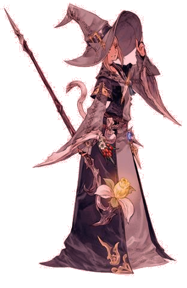
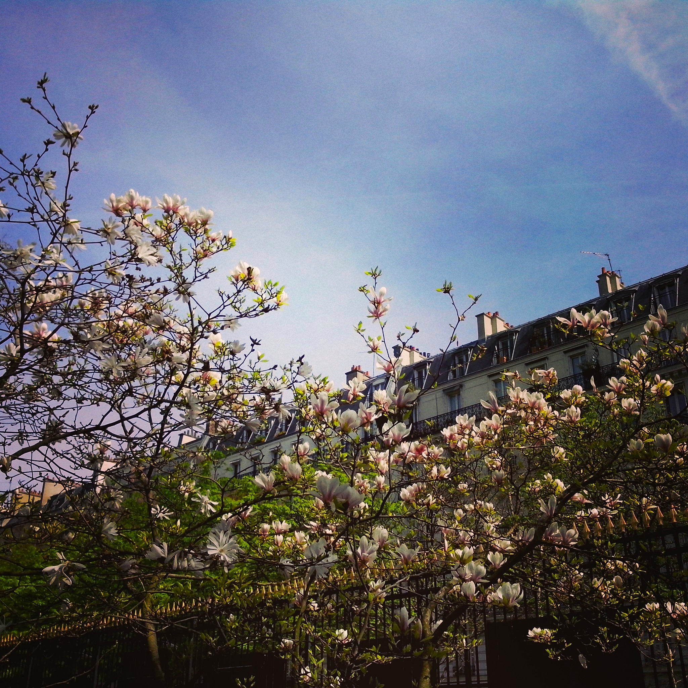

MOOC : Did you say "Images"?
Hello and Welcome on our MOOC about Images!
A MOOC is a Massive Open Online Course made to teach people about a subject on the web with multimedia contents!
Everyday we see tons of different images for instance advertisement, photographs and as long as you can see, everything you see are images!
On computer we are able to change and apply modification to them throught different technique and rendering.
This course is about Images!
We have prepared four courses about Images and you are free to jump from one to another thanks to the bar that is on top of every part! Each part is made of a multimedia content, a written text about the part and finaly a short quizz about the course you just read!
Choose your Course!
First Course: What is a picture?
An image is an array of pixels:
The luminous intensity:
A pixel is described by its coordinates in the image and the value representing its luminous intensity. This luminous intensity represents two different parameters :- If it is a black and white picture, it corresponds to the grayscale (between 0 and 255 when the picture is coded on 8 bits).
- If it is a color picture, it corresponds to the color of the pixel.
The resolution:
A picture has a certain resolution, it is a ratio of the number of pixels in the picture and the dimensions thereof. It is expressed in dpi (dots per inch for knowing an inch is about 2.54 cm).
The format:
A picture is stored in a text file. To manipulate this file it is important to know:- The number of lines and columns of the array of pixels
- The pixel format (bits, grayscales, color level)
- The possible compression
- Simple
- Compressed
For example, PNM (portable anymap), PBM (portable bitmap), PGM (portable grayscale map), PPM (portable pixmap) are simple formats.
In compressed formats, information is compressed to reduce the size of the picture files. For example, some web image like GIF (graphics interchange format) or JPEG (Joint Photographic Experts Group) are in a compressed format.
Here, we have an example of a picture file in the PGM format (specified by “P2” on the file), 24x7 size, with maximum intensity values of 15:
P2
24 7
15
0 0 0 0 0 0 0 0 0 0 0 0 0 0 0 0 0 0 0 0 0 0 0 0
0 3 3 3 3 0 0 7 7 7 7 0 0 11 11 11 11 0 0 15 15 15 15 0
0 3 0 0 0 0 0 7 0 0 0 0 0 11 0 0 0 0 0 15 0 0 15 0
0 3 3 3 0 0 0 7 7 7 0 0 0 11 11 11 0 0 0 15 15 15 15 0
0 3 0 0 0 0 0 7 0 0 0 0 0 11 0 0 0 0 0 15 0 0 0 0
0 3 0 0 0 0 0 7 7 7 7 0 0 11 11 11 11 0 0 15 0 0 0 0
0 0 0 0 0 0 0 0 0 0 0 0 0 0 0 0 0 0 0 0 0 0 0 0
Let's have a little test !
1st Question: What is a picture?
Choices:
- An array of curve lines
- An array of words
- An array of pixels
2nd Question: What is a pixel?
Choices:
- A kind of resolution
- A value and coordinates
- A picture format
3rd Question: How many kind of format exists?
Choices:
- 1
- 2
- 3
Second Course: Filters!
What are Filters?
They are a way to change images by applying modification on the image structure. Thanks to that we are able to fully change the rendering of an image. Making it more blurry, edgy or playing with the shades and light to make it looks better
Now a days Filters are usually used by people directly on their phone using apps. Those apps add a calculation algorithm on a photograph to render a special effect. On a more professional way they are usually used by photograper or image specialists. They usually used computers with software such as photoshop. Filters can be explain also in another way like applying a kind of transparent images with a pattern or a color to change the original picture and add an effect.
For example this is what an image can become after applying a light red filter
Those kind of filter work by adding a red images on the first one and fusioning the colors. It is exactly the way you do it by applying a transparent red paper on your image
Gauss filter:
It is a filter to make your image a bit more flat and blurry:
Median filter: Noise reduction
It is a filter to make your image a bit more sharp and neet:
A few example of Filters used on photographs:
< Let's have a little test!
1st Question: What is a filter?
Choices: a cigarette, a way to modify an image, a photograph
Answer:2nd Question: What is noise reduction?
Choices: a Headphone , a way to make an image looks sharper , a chirugical operation
Answer:3rd Question: Who usually use filters?
Choices: Advertisers , Photographs , Teenagers
Answer:Third Course: Operations between pictures
Post haec Gallus Hierapolim profecturus ut expeditioni specie tenus adesset, Antiochensi plebi suppliciter obsecranti ut inediae dispelleret metum, quae per multas difficilisque causas adfore iam sperabatur, non ut mos est principibus, quorum diffusa potestas localibus subinde medetur aerumnis, disponi quicquam statuit vel ex provinciis alimenta transferri conterminis, sed consularem Syriae Theophilum prope adstantem ultima metuenti multitudini dedit id adsidue replicando quod invito rectore nullus egere poterit victu.
Novo denique perniciosoque exemplo idem Gallus ausus est inire flagitium grave, quod Romae cum ultimo dedecore temptasse aliquando dicitur Gallienus, et adhibitis paucis clam ferro succinctis vesperi per tabernas palabatur et conpita quaeritando Graeco sermone, cuius erat inpendio gnarus, quid de Caesare quisque sentiret. et haec confidenter agebat in urbe ubi pernoctantium luminum claritudo dierum solet imitari fulgorem. postremo agnitus saepe iamque, si prodisset, conspicuum se fore contemplans, non nisi luce palam egrediens ad agenda quae putabat seria cernebatur. et haec quidem medullitus multis gementibus agebantur.
Intellectum est enim mihi quidem in multis, et maxime in me ipso, sed paulo ante in omnibus, cum M. Marcellum senatui reique publicae concessisti, commemoratis praesertim offensionibus, te auctoritatem huius ordinis dignitatemque rei publicae tuis vel doloribus vel suspicionibus anteferre. Ille quidem fructum omnis ante actae vitae hodierno die maximum cepit, cum summo consensu senatus, tum iudicio tuo gravissimo et maximo. Ex quo profecto intellegis quanta in dato beneficio sit laus, cum in accepto sit tanta gloria.
Let's have a little test!
1st Question: What is a pokemon ?
Choices: 1 , 2 , 3
Answer :
1st Question: What is a pokemon ?
Choices: 1 , 2 , 3
Answer :
1st Question: What is a pokemon ?
Choices: 1 , 2 , 3
Answer:
Forth Course : Objects modeling
| Let's learn how objects are represented: |
| Let's practice: Exemple of modeling a cube and a sphere |
WebGL application for Modeling Objects
Let's have a little test !
1st Question : How we can simply define a sphere in a spherical coordinate system ?
Choices:
- With a point and it's ray dimension
- With the radial distance, azimuth and polar angles
- with a radius and 4 points
2nd Question : What's a Bezier curve ?
Choices:
- Is sinusoidal
- A parametric curve
- A smooth curve
3rd Question : how to define colors in WebGL
Choices:
- By fixing cyan, red and yellow colors
- Using palette color
- Using RGB in matricial format